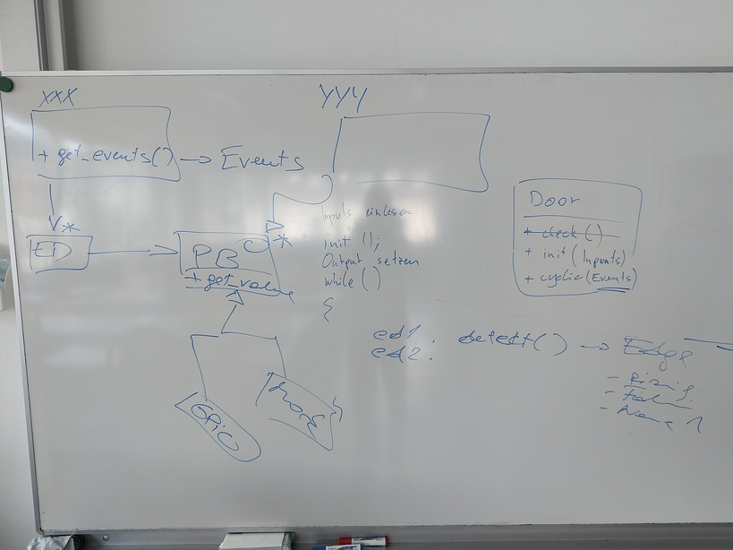
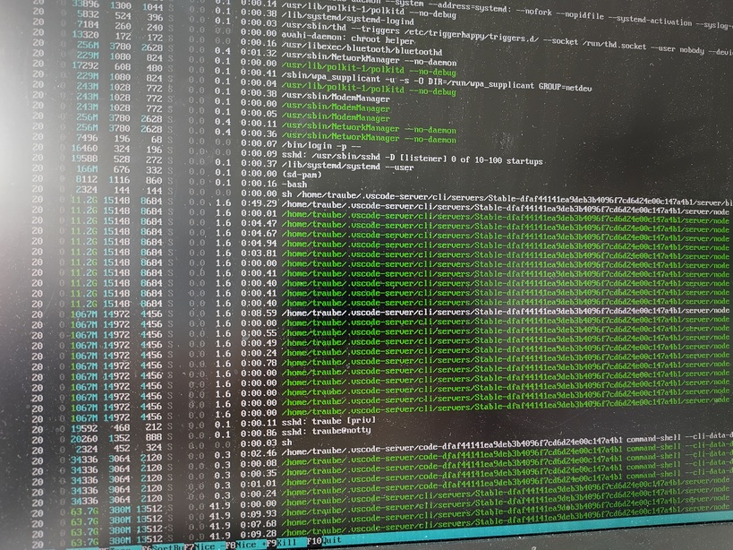

2025-06-17 (2*3 UE): Project Work#
Group 1: Pressure Sensor, SPS Dreamteam, Edge Detection#
Pressure Sensor#
Split group
Hardware specific part
Setup Pi
Implement prototype (in Python)
Create C++ class from it
Software/Agile part
Much like the event detector task computes events/edges from GPIO levels 0 and 1, the pressure thing needs to be configured to recognize over-pressure (harming people) and under-pressure (sensor defect).
The SPS dream team can then consume these pressure events much like it consumes GPIO edges.
Define interface for sensor
Create mocking version
Over/under-pressure detection
Write unit tests first
Hysteresis of some kind
SPS Dreamteam#
Group 2: libgpiod Fiasco#
Problem(s)#
WSL does not have
libgpiodversion 2WSL is of limited use anyway: PCs usually don’t have GPIO hardware, and if so they are unlinkely to be seen from Linux
VirtualBox/Debian likewise
Solution: Raspi As Development Machine#
This is challenging on a Raspi 3!
vscode’s SSH remote file access consumes an infinite amount of resources ⟶ cannot work from PC
Running a graphical editor on the Pi requires a graphical desktop. This also requires a non-negligible amount of resources but should work.
I recommend using
gedit. Works like notepad++, only better.
Install libgpiod#
Prerequisites
$ sudo apt install -y automake autoconf autoconf-archive libtool
Get/Build/Install
libgpiod$ git clone https://git.kernel.org/pub/scm/libs/libgpiod/libgpiod.git $ cd libgpiod/ $ ./autogen.sh --enable-tools $ ./configure --enable-tools --enable-bindings-cxx $ make $ sudo make install
Build Our Project On Raspberry
Use desktop OS version
Sync your fork
Clone project on Raspberry
Possibly copy SSH private key to Raspberry?
Build as usual
Watch out for
libgpiodrelated warnings